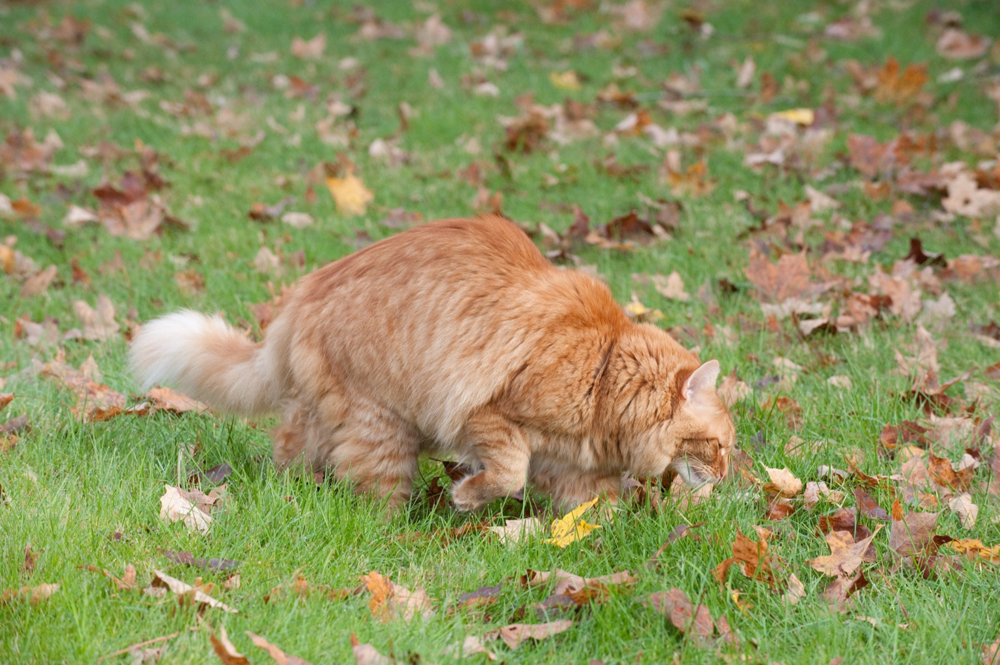

The Calling Card in a Cat's Kidneys
SCIENCE & TECHNOLOGY · SEPTEMBER 21, 2026

For about 110 years, anyone who has looked at a domestic cat's kidney under a microscope has found it unusually full of lipid droplets — little globules of stored fat, packed into the renal cortex in quantities you do not see in most mammals. It has been a known oddity with no known purpose for longer than most scientific mysteries survive. A paper in Current Biology by Shota Ichizawa, Masao Miyazaki and colleagues at Iwate University in Japan, with collaborators in Germany and Spain, now proposes an answer, and it is a good one: the droplets are a supply depot for a chemical signature, and the signature goes out in the cat's urine.
The signature is made of thirteen branched-chain fatty acids — a set of molecules the authors describe as structurally unusual and not previously documented in mammalian urine or any other bodily secretion. The proportions of the thirteen differ from cat to cat. Within one cat, they hold steady. And crucially, they do not blow away: the profile stays recognisable on the ground for at least a day after the cat has left. Which is to say cats have been leaving each other individually addressed messages the whole time, and we have been staring at the postbox for a century without recognising it.
Why a Slow, Heavy Molecule Is the Right Molecule for This Job
A branched-chain fatty acid is what the name says: a fatty acid whose carbon chain has a methyl group hanging off it somewhere rather than running straight from end to end. That branch matters for this purpose, because it makes the molecule less volatile than the lightweight compounds that usually do the work in animal scent. These are semi-volatile — they evaporate, but reluctantly.
Think about what a territorial mark actually has to do. It is not a conversation; it is a notice left on a door for whoever comes past next, which might be in ten minutes or tomorrow morning. A fast, sharply volatile molecule makes a loud announcement and then is gone. A slower one persists — and more to the point, if the whole set of thirteen evaporates at broadly similar rates, the ratios between them survive even as the total quantity falls. The message can fade in volume without changing in content. The researchers measured this directly: at 25°C, the distinctive individual profiles remained comparatively stable in urine-soaked material for at least twenty-four hours.
This is not the smell you are thinking of. The notorious stink of tomcat urine has a known chemistry and a different one: an amino acid called felinine, made in cat urine with the help of an enzyme named cauxin that is produced almost exclusively in the kidneys of cats and their close relatives, and which breaks down into 3-mercapto-3-methylbutan-1-ol — the sulphurous compound that makes a marked doorway unmistakable at twenty paces. Masao Miyazaki, the senior author on the new paper, was also an author on the 2006 work that established the cauxin pathway, so this is the same lab returning to the same organ twenty years later and finding a second system underneath the first. The felinine route is the shout; the branched-chain fatty acids are the signature at the bottom of the note.
How They Knew the Cats Could Actually Read It
This is the part that makes the paper more than a chemistry inventory, and it is worth spelling out, because "we found molecules that vary between individuals" is a much weaker claim than "the animals use them."
The team ran what they call behaviour-guided chemistry: let the cats' responses point at which compounds matter, rather than deciding in advance. The readouts were the ordinary ones — how long a cat spends sniffing something, and the flehmen response, the slightly appalled open-mouthed grimace cats and other mammals make to draw scent over the vomeronasal organ in the roof of the mouth. Cats sniffed less on repeated exposure to the same urine and more when the sample changed, which is the standard signature of recognition rather than mere interest, and they still discriminated after gaps of months.
The control that does the real work, though, is this: the cats could tell donors apart from the branched-chain fatty acid composition even when it was presented against a matched, reconstructed urinary lipid background. In other words, the experimenters built a synthetic backdrop identical in everything else and varied only the thirteen-molecule profile — and the cats still told them apart. That rules out the obvious alternative explanation, which is that the cats were reading some other individually variable feature of real urine and the fatty acids were along for the ride.
The Kidney as a Buffer
Which brings the story back to the droplets. Whatever else an individual signature has to be, it has to be stable — and animals are not stable. Diet changes, hydration changes, stress changes, a cat gets into something it should not have. If the signature were assembled fresh from whatever the body happened to be metabolising that morning, it would be a weather report, not a name.
The authors traced the fatty acids to triacylglycerol-rich lipid droplets in the renal cortex and argue the droplets act as a physiological reservoir: a buffer that smooths out short-term variation, so that what leaves the body is an average rather than a snapshot. That is an unusually satisfying answer to a century-old question, because it explains the anatomy and the behaviour with one mechanism. In Miyazaki's own words, the droplets have been known for more than a century but why cats have so many of them has remained a mystery; the suggestion is that one of their functions is to support a stable chemical signature in the urine.
They also looked outward across the cat family — lions, tigers, leopards, jaguars, lynxes — and found the associated urinary and renal lipid signatures broadly distributed but non-uniform: different lineages carry different repertoire complexity and different storage architecture. So this is an old feline system that has been elaborated in different directions, not a quirk of the housecat.
Do People Have One Too?
The obvious next question, and the one I actually wanted answered: is there a human version of this? Could you identify a specific person from their urine?
The short answer is yes in principle, and that is a much weaker statement than it sounds. Here is the real literature.
The foundational finding is a 2008 paper in PNAS by Assfalg and colleagues, who ran nuclear magnetic resonance on 873 urine samples from 22 healthy people over three months. Their first result is the discouraging one: day-to-day variability is large. Any single urine sample is what they call a metabolic "snapshot," not a portrait — it reflects last night's dinner as loudly as it reflects you. But when they analysed multiple samples per person together, an invariant component fell out, characteristic of the individual. Personal metabolic phenotypes exist. They just are not visible in one look.
A 2021 twin study in the Journal of Proteome Research put numbers on the stable part: in 128 twins sampled at baseline, one month and two months, roughly 20 percent of the urinary NMR metabolome was stable over two months — and when you restrict attention to that stable fraction, 91 percent of individuals showed good conservation of their own profile. Both genetics and shared environment contributed, which is what you would expect of something shaped by inherited enzymes, a household diet and a gut microbiome you largely acquired from the people you live with.
The longest look is a 2014 study in Metabolomics by Yousri and colleagues, which tracked a 212-metabolite panel in 818 participants from a German population cohort across a seven-year gap. Ninety-five percent of participants showed a high degree of metabotype conservation, and — the figure worth remembering — over 40 percent could be uniquely identified after seven years from their metabolic profile alone. Which is genuinely remarkable, and also means that nearly sixty percent could not.
Closest to the cats' own chemistry is a 2013 study in the Journal of Forensic Sciences by Kusano, Mendez and Furton, who profiled the volatile organic compounds in hand odour, oral fluid, breath, blood and urine from 31 individuals by gas chromatography–mass spectrometry. Within any one specimen type, they could distinguish individuals at better than 99 percent. Two details of that paper deserve as much attention as the headline. First, profiles did not cross-match between specimen types — a person's urine did not resemble their own breath, with rank correlations below 0.15 — so there is no single "human scent" underneath, but a set of separate, specimen-specific signatures. Second, the long-term stability check in that study followed exactly two people for six months.
And the Part Where That Gets Dangerous
So a real biochemical signature exists. The distance between that sentence and "you can identify a person from it" is where the trouble lives, and the history here is not hypothetical.
Human scent identification has been used in criminal investigations for decades, most visibly in the form of the scent lineup: gauze is wiped on a suspect and on several other people, the samples go into separate containers, a trained dog is given something from the crime scene to smell and then led along the row to indicate a match. It looks like a lineup, it sounds scientific, and it has repeatedly been wrong. The Innocence Project has documented dog scent evidence contributing to at least three wrongful convictions later overturned by DNA testing — Wilton Dedge and William Dillon in Florida, James Ochoa in California — and noted a Texas handler whose dogs had worked something like 2,000 cases nationally, alongside lawsuits from men implicated by those lineups and subsequently cleared. As of the Innocence Project's 2009 account, unvalidated forensic science of this general kind was implicated in roughly half of the first 240 DNA exonerations in the United States. One former head of the National Association of Criminal Defense Lawyers called the technique "forensic voodoo," which is strong language that the record does not obviously contradict.
The failure there was never the premise. Individual chemical variation in human odour is real, and the studies above are the evidence for it. The failure was skipping every step between "individuals differ" and "this procedure reliably identifies one person" — error rates under blind conditions, handler-cueing controls, population-scale data on how often two unrelated people's profiles collide. So the honest answer to the question is in two parts. Could a person's urine in principle carry an individually distinctive chemical signature? Yes — the published work says so, with real caveats about how much of the profile is stable and over what timescale. Is identifying someone from urine a forensic method in the sense that DNA profiling or fingerprint comparison are? No, and nothing in this literature claims it is.
Which is, I think, the quiet compliment buried in the cat paper. Ichizawa and colleagues did not stop at finding thirteen molecules that vary between animals. They built a synthetic background, held everything else constant, and made the cats prove they were reading the thing the researchers thought they were reading. That control is precisely what the scent-lineup tradition never had — and it is why the claim about cats is on firmer ground than a century of claims about people.
Where I Could Be Wrong
- I have read the abstract, the institutional announcements and the science coverage of the cat study, not the full paper. A Current Biology article with twenty supplementary items has a great deal in it that no summary carries, and the number of animals, the breed and housing composition of the sample, and the statistical treatment of the behavioural tests are all things that would sharpen or soften the claims above.
- The seven-year identification figure is not a urine figure. The Yousri study profiled a 212-metabolite panel in a population cohort; I have used it for the general point that individual metabolic signatures persist over long periods, and leaned on the NMR and volatile-compound studies for anything specific to urine. Treating the 40 percent as a urine result would be over-reading it.
- Sample sizes in the human-individuality literature are small. Twenty-two people, 128 twins, 31 people: these are proof-of-concept studies in individual laboratories, and an identification rate measured against thirty candidates is a fundamentally different quantity from one measured against a population.
- My Innocence Project figures are dated. The account I have drawn on is from 2009, and the DNA exoneration total it cites has grown substantially since. The three named cases and the general criticism of scent lineups stand; the proportion should be read as a snapshot of that moment, not a current statistic.
- "Not previously documented in mammalian urine" is the authors' claim, not my verification of it. Negative claims about the whole prior literature are the hardest kind to check, and chemical-ecology papers on other species are scattered across journals that do not talk to each other much.
- I have described the felinine and cauxin pathway as the separate, better-known system, which is how the two read side by side — but the same organ makes both, and whether they are genuinely independent or share upstream machinery is not something the public summaries settle.
Sources
- Ichizawa, S., Caspers, J., Uenoyama, R., et al. (Miyazaki, M., senior author). Signatures of branched-chain fatty acids derived from a kidney reservoir confer stable chemical individuality on domestic cats. Current Biology 36(17), 4340–4353.e20, 2026. doi:10.1016/j.cub.2026.07.045. pubmed.ncbi.nlm.nih.gov
- Sci.News. Scientists Solve Century-Old Feline Mystery. 2026 — source of Prof. Miyazaki's quoted remarks and the comparative-felid detail. sci.news
- Miyazaki, M., Yamashita, T., Suzuki, Y., et al. A major urinary protein of the domestic cat regulates the production of felinine, a putative pheromone precursor. Chemistry & Biology 13(10), 1071–1079, 2006. pubmed.ncbi.nlm.nih.gov
- Assfalg, M., Bertini, I., Colangiuli, D., et al. Evidence of different metabolic phenotypes in humans. PNAS 105(5), 1420–1424, 2008. doi:10.1073/pnas.0705685105. pnas.org
- Bermingham, K.M., Brennan, L., Segurado, R., et al. Genetic and Environmental Contributions to Variation in the Stable Urinary NMR Metabolome over Time: A Classic Twin Study. Journal of Proteome Research 20(8), 3992–4000, 2021. pubmed.ncbi.nlm.nih.gov
- Yousri, N.A., Kastenmüller, G., Gieger, C., et al. Long term conservation of human metabolic phenotypes and link to heritability. Metabolomics 10(5), 1005–1017, 2014. doi:10.1007/s11306-014-0629-y. pubmed.ncbi.nlm.nih.gov
- Kusano, M., Mendez, E., Furton, K.G. Comparison of the volatile organic compounds from different biological specimens for profiling potential. Journal of Forensic Sciences 58(1), 29–39, 2013. pubmed.ncbi.nlm.nih.gov
- Innocence Project. Scent Lineups and Unvalidated Science. 30 June 2009. innocenceproject.org